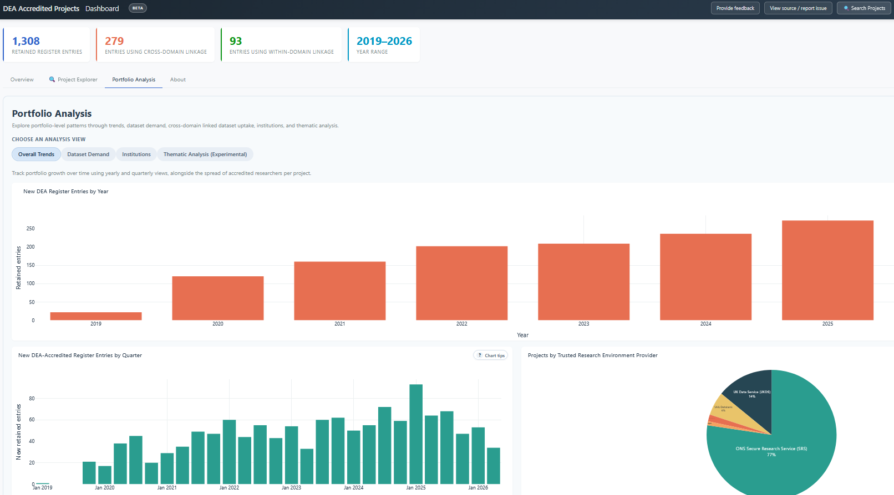

About
Since 2020 I've worked in sensitive-data research infrastructure, at the Joint Biosecurity Centre, ADR UK and DARE UK. I now build and validate data-use tools with UCL. Before that I was a research scientist (PhD).
Balint Stewart
Data scientist building tools for research data infrastructure · London, UK
I turn public registers of data use into searchable, validated evidence of public benefit: for funding renewals, for public accountability, and for deciding where to invest.
Show how your data is used, demonstrate public benefit, and publish transparent, searchable registers.
See which investments researchers actually use, by whom and for what, and where demand isn't being met.
Account for public funding with clear evidence of what research it supports.
Turn a static register of approved projects into a live, searchable dashboard, with each project classified by topic and purpose.
Analysis of research activity across your investments: what's used, what's growing, and where activity matches or misses your priorities.
Where AI is used to classify or summarise records, a validation plan that tests it against trained human judgement, so you know which results you can rely on.
projects accredited under the Digital Economy Act, in a live public dashboard with a pre-registered validation study.

A typical engagement takes six weeks.
Since 2020 I've worked in sensitive-data research infrastructure, at the Joint Biosecurity Centre, ADR UK and DARE UK. I now build and validate data-use tools with UCL. Before that I was a research scientist (PhD).
Book a 20-minute call, or send me your register and I'll show you what it could look like.